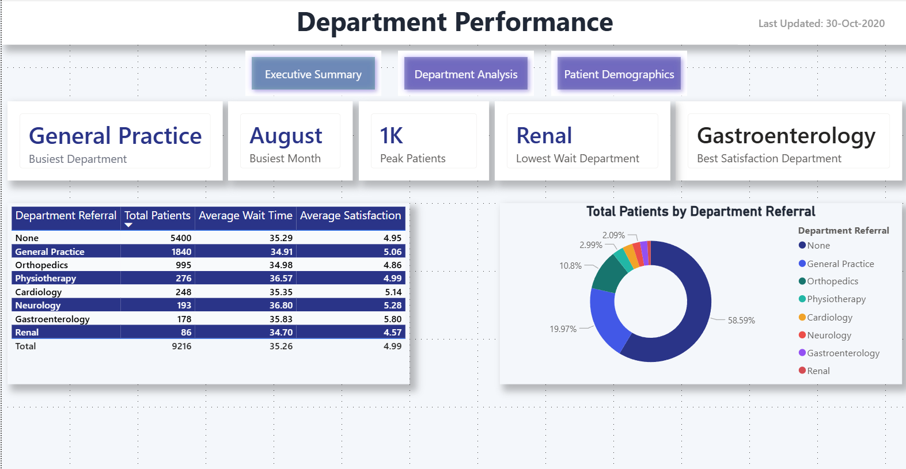
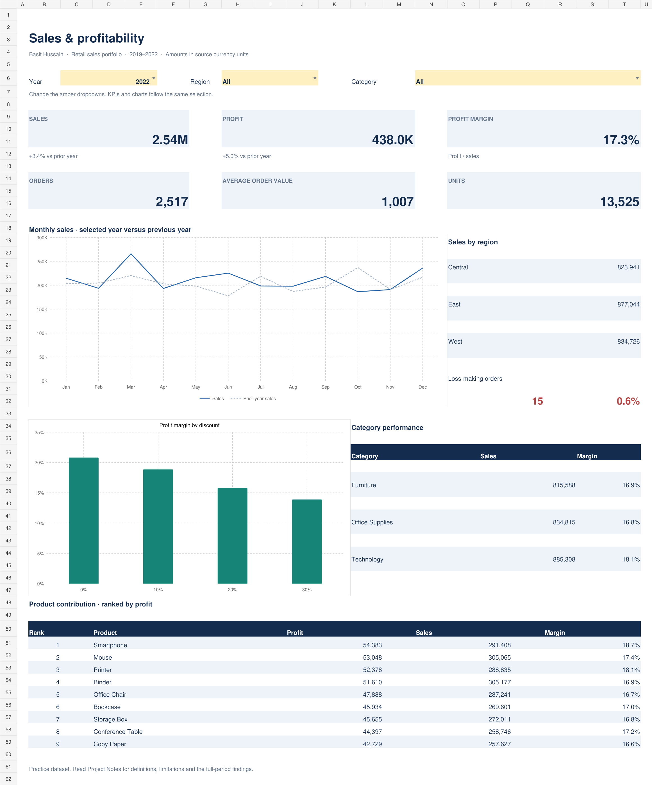
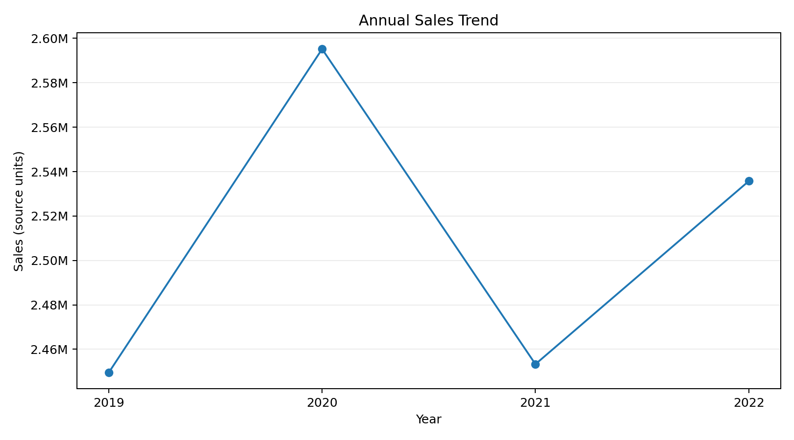
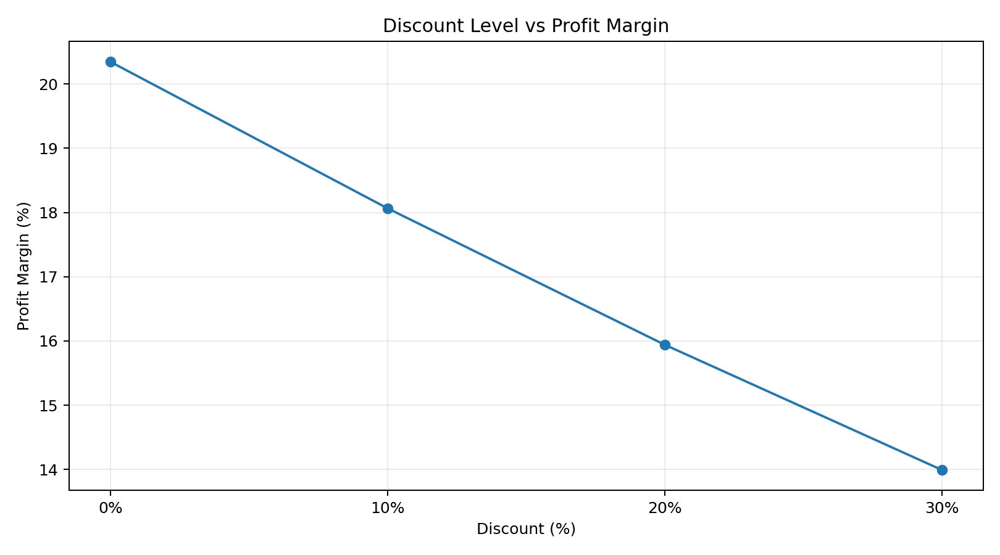
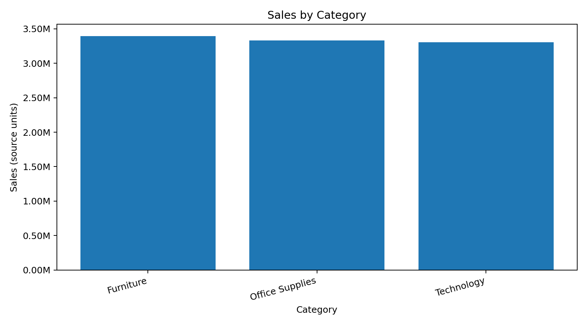
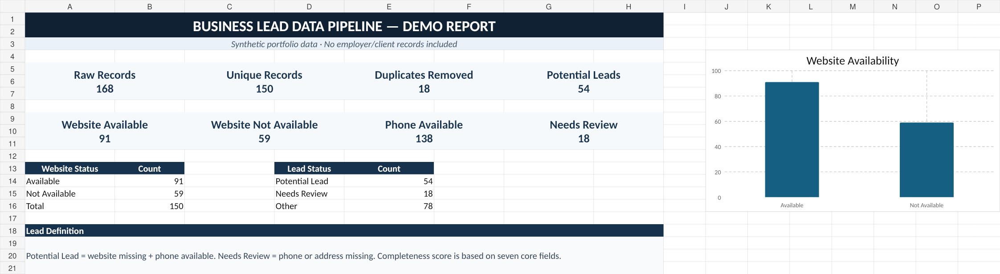
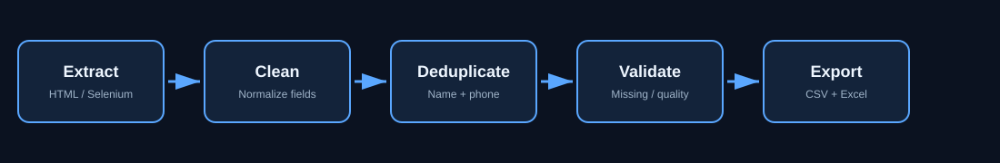

Analysis & reporting
Explore trends, reconcile results, build KPI views and communicate findings clearly.
DATA ANALYST · KARACHI, PAKISTAN
I’m Basit Hussain. I work across data collection, cleaning, analysis and reporting—building reliable datasets and practical dashboards that are easy to use.
I work at the intersection of data collection, quality and analysis—turning raw information into structured outputs teams can actually use.
My current work centers on business data: collecting records, validating details, removing duplicates, separating usable leads and delivering organized Excel files. Earlier pharmaceutical sales experience gave me a commercial view of targets, territory performance and reporting.
I’m continuing toward data science through hands-on work in Python, SQL, Excel and Power BI. My BS Computer Science coursework is complete, with final results pending.
Technical skills organized around the work they help deliver.
Explore trends, reconcile results, build KPI views and communicate findings clearly.
Query, aggregate and compare data using joins, CTEs, window functions and conditional logic.
Clean, transform and automate repetitive data tasks with maintainable scripts.
Collect business information, verify fields, detect missing values and structure usable datasets.
A repeatable workflow keeps analysis useful and defensible.
Gather data from files, databases or web sources.
Check missing fields, duplicates, formats and obvious inconsistencies.
Clean, standardize and shape the data for analysis.
Use queries, formulas and code to answer the business question.
Present the result through dashboards, reports or clean deliverables.

LIVE PROJECT PREVIEWMulti-page Power BI dashboard analyzing emergency-room activity, department performance, patient demographics, wait times and satisfaction. Interactive filters and navigation support operational drill-downs across 9,216 patient records.

Analyzed 10,000 practice retail records across 2019–2022 to explore sales growth, product contribution and profit margin with interactive filters and formula-based validation.
Practice dataset · source currency unspecified · descriptive findings, not causal claims.
End-to-end PostgreSQL analysis of 10,000 retail sales records covering data quality, KPI analysis, monthly and yearly trends, product performance, regional results and discount profitability.



Reproducible Python workflow that validates, cleans and transforms 10,000 retail records, engineers analysis features, calculates KPIs and exports business-focused charts and summary tables.
Practice dataset · source currency unspecified · 0 duplicate rows and 0 missing source cells in the supplied snapshot.

DEMO OUTPUT
End-to-end Python workflow for collecting business-directory records, normalizing fields, removing duplicates, validating missing information, classifying website availability and exporting structured lead data to Excel.
Synthetic portfolio data only · no employer, client or confidential Q-Solutions records included. Potential Lead = website missing + phone available.
Q-Solutions · Karachi
Collect and verify business listings, clean duplicate and incomplete records, and deliver organized Excel datasets for lead research.
Highnoon Laboratories · Karachi
Planned territories and tracked sales performance using reporting and competitor analysis to guide field decisions.
Scilife Pharma · Karachi
Developed field research, relationship management and structured reporting experience.
BS Computer Science
Federal Urdu University of Arts, Science & Technology (FUUAST), Karachi · 2022–2026
Coursework completed; final results pending.
Experience, education, technical skills and selected projects in one document.
Open to Data Analyst and BI opportunities, project work and relevant collaborations.